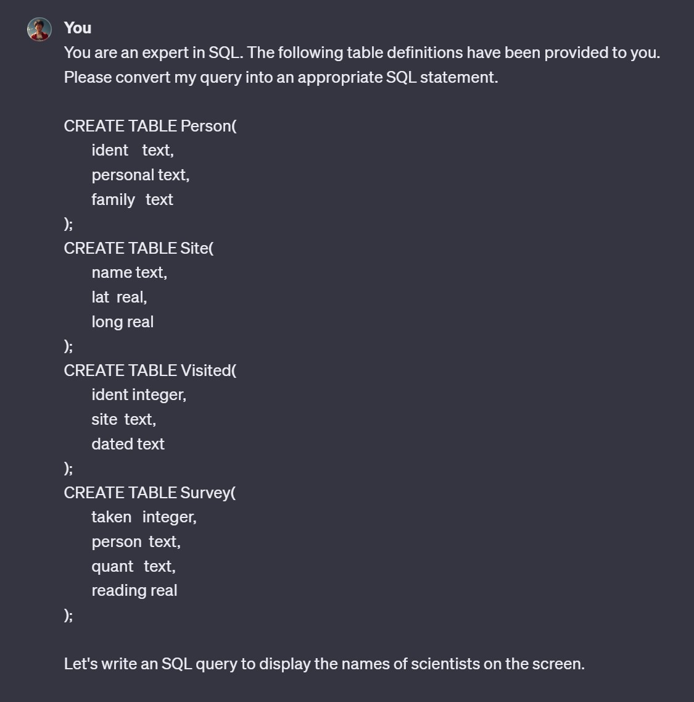
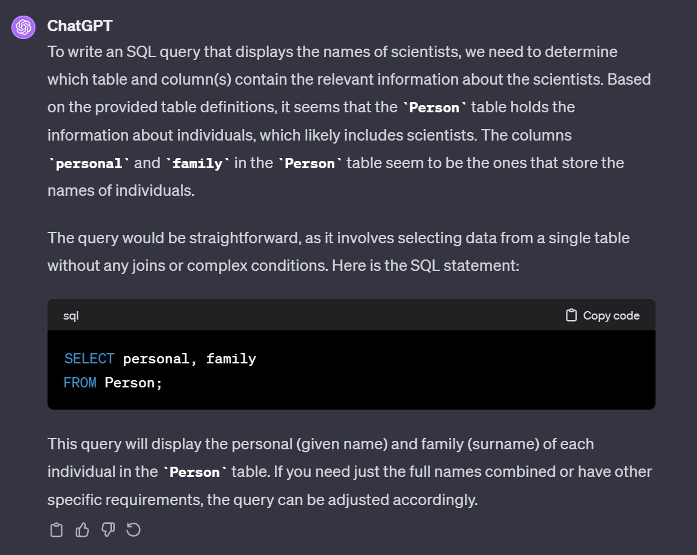

flowchart TB
subgraph A["사용자 인터페이스"]
direction LR
CLI["CLI 1950~<br>Command Line Interface<br> GUI 1970~<br> Graphic User Inferface"] --> WIMI
WIMI["Web Interface <br> 1994~ <br> Mobile Interface <br> 2007~"] --> NUI["LUI 2023~<br> Language <br> User Interface"]
end
classDef default fill:#f9f7f7,stroke:#333,stroke-width:2px;
classDef A font-size:16px;
16 자연어 SQL 쿼리
1950년대부터 본격적으로 컴퓨터가 도입되면서 CLI를 필두로 다양한 사용자 인터페이스(User Interface)가 적용되었다. 스티브 잡스의 애플사는 매킨토시 GUI에 이어 아이폰 모바일 인터페이스를 일반화시켰다면, 최근 챗GPT는 언어 사용자 인터페이스(LUI)를 통해 각 분야에 혁신을 예고하고 있다. 챗GPT(Vaswani 기타 2017) 데이터 과학도 사용자 관점에서 보자. 기존 R, 파이썬, SQL, 엑셀 등 데이터 과학 구문을 머리속에 암기하고 있거나 구글이나 네이버를 통해 중요 키워드를 통해 문제를 해결해야 했었다. 하지만, 이제 챗GPT가 자연어를 이해하기 때문에 데이터 전처리, 통계 작업, 데이터 분석, 시각화, 모형개발 등 데이터 과학 전반에 변화는 필연적이다. (Wickham, Çetinkaya-Rundel, 와/과 Grolemund 2023) (Wickham 기타 2019) (Gozalo-Brizuela 와/과 Garrido-Merchan 2023)
챗GPT(Wu 기타 2023)는 인터넷에서 방대한 양의 데이터를 학습하여 이를 정말 잘 압축한 하나의 저장소로 이해할 수 있다. 따라서, 압축을 풀게 되면 정확히 원본을 복원할 수 있는 부분도 있지만, 그렇지 못한 부분도 당영히 있게 된다.
챗GPT를 “웹의 흐릿한 JPEG”(Chiang 2023)으로 비유하고 있다. JPEC 기술 자체는 손실 압축기술로 무손실 압축기술로 대표적인 PNG와 대비된다. 흐릿한 이미지가 선명하지 않거나 정확하지 않은 것처럼 ChatGPT도 항상 완벽한 답변을 제공하거나 모든 질문을 제대로 이해하는 것도 아니다. 하지만 사용자와의 대화를 기반으로 끊임없이 학습하고 개선하고 있다. 더 많은 사람들이 챗GPT를 사용할수록 사람의 언어를 더 잘 이해하고 반응할 수 있게 개발된 기술이다.
16.1 프롬프트 공학
프롬프트 공학(Prompt Engineering)은 챗GPT와 같은 AI 언어 모형로부터 구체적이고 정확하며 관련성 있는 응답을 도출하기 위해 프롬프트(Prompt, 지시명령어)를 설계하고 개선하는 과정이다. 프롬프트의 품질이 GPT 모형 출력결과에 큰 영향을 미칠 수 있기 때문에 이 작업은 매우 중요하다. 프롬프트 엔지니어링의 목표는 사용자와 AI 모델 사이 커뮤니케이션을 최적화하여 AI 시스템의 유용성과 효율성을 향상시키는 것이다.
프롬프트 엔지니어링은 반복적인 작업과정으로 AI의 응답에 따라 프롬프트를 조정하고 개선해야 할 수도 있다는 점을 항상 염두에 두고, 다음 프롬프트 구성요소를 프롬프트에 녹여 제작할 경우 AI 언어 모델이 목표에 부합하는 정확하고 관련성 있는 구체적인 답변을 효과적으로 생성할 수 있다.
AI 언어 모델과의 효과적인 커뮤니케이션을 위해 프롬프트를 작성할 때 고려해야 할 몇 가지 구성 요소가 있다. 잘 만들어진 프롬프트의 몇 가지 핵심 구성 요소를 다음과 같이 정리할 수 있다.
명확성: 프롬프트는 명확하고 이해하기 쉬워야 한다. 즉, AI 언어모델이 혼동할 수 있는 전문 용어, 은어 또는 모호한 언어는 사용하지 않는다.
맥락(Context): AI 언어모델이 해결해야 할 주제나 지시 업무를 파악하는 데 도움이 되는 충분한 맥락(Context)를 제공한다. 질문 혹은 요청과 관련된 배경 정보, 구체적인 세부 정보 또는 예시가 포함된다.
구체성: AI 언어모델이 원하는 답변으로 안내할 수 있도록 프롬프트를 최대한 구체적으로 작성한다. 답변의 형식, 정보의 범위 또는 집중적으로 다루고 싶은 주제의 특정 측면을 지정하는 행위가 포함된다.
모호성 제거: AI 언어모델이 질문을 오해하거나 관련 없는 답변을 제공할 가능성을 줄이려면 프롬프트에 모호성이 있는지 확인한다. 프롬프트가 여러 가지 의미로 해석될 수 있는 경우, 모호함이 없도록 프롬프트를 다시 작성한다.
제약 조건: 단어 수 제한이나 주제의 특정 측면과 같은 제약 조건을 포함하면 AI 언어모델이 보다 집중적이고 관련성 높은 답변을 제공하도록 유도할 수 있다. 특히, 광범위한 주제에 대한 정보를 찾거나 간결한 답변을 찾을 때 유용하다.
지시사항: AI 언어모델이 특정 작업을 수행하거나 특정 방식으로 동작하도록 하려면 프롬프트에 명시적인 지침을 포함한다. 예를 들어, AI에게 장단점을 나열하거나, 두 항목을 비교하거나, 특정 관점을 고려하도록 요청한다.
문법과 철자: AI 언어모형이 수행 작업을 해석할 때 문법 정보를 사용하기 때문에 올바른 문법과 철자법을 맞게 작성하는 것은 중요하다.
16.2 챗GUI 인터페이스
survey.db 데이터베이스 SQL 쿼리를 개발자가 직접 작성하는 것을 지양하고 AI를 사용하여 SQL 쿼리를 제작한다. 현존하는 가장 성능이 높은 AI로 평가받는 OpenAI GPT-4 챗팅 인터페이스를 사용하여 SQL 쿼리를 제작한다.
You are an expert in SQL. The following table definitions have been provided to you. Please convert my query into an appropriate SQL statement.
CREATE TABLE Person(
ident text,
personal text,
family text
);
CREATE TABLE Site(
name text,
lat real,
long real
);
CREATE TABLE Visited(
ident integer,
site text,
dated text
);
CREATE TABLE Survey(
taken integer,
person text,
quant text,
reading real
);
Let's write an SQL query to display the names of scientists on the screen.To write an SQL query that displays the names of scientists, we need to determine which table and column(s) contain the relevant information about the scientists. Based on the provided table definitions, it seems that the Person table holds the information about individuals, which likely includes scientists. The columns personal and family in the Person table seem to be the ones that store the names of individuals.
The query would be straightforward, as it involves selecting data from a single table without any joins or complex conditions. Here is the SQL statement:
SELECT personal, family
FROM Person;This query will display the personal (given name) and family (surname) of each individual in the Person table. If you need just the full names combined or have other specific requirements, the query can be adjusted accordingly.
그림 16.2 에 챗GPT 인터페이스를 사용하여 SQL 쿼리를 생성하는 과정을 캡쳐하여 실제 실행결과를 화면에 담았다.


16.3 프로그래밍
GUI 챗팅 인터페이스를 사용하면 직관적으로 SQL 쿼리를 생성할 수 있지만, 자동화를 할 수 없다는 문제와 함께 재사용도 매번 복사하여 붙여넣기를 해야한다는 문제가 있다. 대신 프로그래밍을 통해 SQL 쿼리 생성작업을 자동화하고 재사용할 수 있도록 한걸음 더 들어가 본다.
자연어로 SQL 쿼리를 생성하는 프로그램 작성을 본격적으로 들어가기 전에 기본적인 설정을 다음과 같이 설정한다. 다양한 언어로 OpenAI API를 활용하는 것이 가능하지만 지면관계상 파이썬으로 OpenAI GPT 모델을 사용해 사용자 질문에 자동으로 답하는 스크립트를 작성한다. 헬로월드(“Hello World!”)를 통해 기본 설정이 정상동작하는지 확인한다.
```{python}
import os
from openai import OpenAI
from dotenv import load_dotenv
load_dotenv()
client = OpenAI(
api_key=os.getenv('OPENAI_API_KEY'),
)
chat_completion = client.chat.completions.create(
messages=[
{
"role": "user",
"content": "SQL이 뭔지 간략하게 설명해줘",
}
],
model="gpt-3.5-turbo",
)
print(chat_completion.choices[0].message.content)
```- 모듈 가져오기:
os는 운영 체제와 상호작용하고, 환경 변수에 접근하는 데 사용된다.openai는 OpenAI의 파이썬 클라이언트 라이브러리로, GPT 모델을 사용하는 데 필요하다.dotenv는.env파일에서 환경 변수를 로드하는 데 사용된다.
- 환경 변수 로드:
load_dotenv()는 프로젝트 루트의.env파일로부터 환경 변수를 로드한다..env파일에 저장된OPENAI_API_KEY환경변수를 가져온다.
- OpenAI 클라이언트 초기화:
OpenAI를 사용해 API 클라이언트를 생성한다.api_key=os.getenv('OPENAI_API_KEY')는 환경 변수에서OPENAI_API_KEY를 가져와 클라이언트를 인증한다.
- 채팅 완성 생성:
client.chat.completions.create는 OpenAI의 채팅 완성 API를 사용해 채팅 대화를 생성한다.messages는 사용자의 입력 메시지를 담고 있다. 이 경우 “SQL이 뭔지 간략하게 설명해줘”라는 질문이 포함되어 있다.model="gpt-3.5-turbo"는 사용할 GPT 모델을 지정한다.
- 결과 출력:
print(chat_completion.choices[0].message.content)는 생성된 채팅 대화에서 첫 번째 선택 항목의 메시지 내용을 출력한다. 이는 GPT 모델이 생성한 답변을 보여준다.
SQL(Structured Query Language)은 데이터베이스 관리 시스템(DBMS)에서 데이터를 관리하고 조작하는 데 사용하는 표준화된 프로그래밍 언어입니다. SQL은 사용자가 데이터베이스에 대한 쿼리를 작성하여 데이터를 검색, 삽입, 수정, 삭제하는 등 데이터베이스에 대한 다양한 작업을 수행할 수 있게 해줍니다. SQL은 간결한 구문과 명확한 명령어를 사용하며, 이를 통해 데이터베이스에 저장된 대량의 데이터를 효율적으로 조작할 수 있습니다. SQL은 관계형 데이터베이스 시스템(RDBMS)에서 주로 사용되며, 사용자의 요구에 따라 데이터를 가져오거나 수정하는 등 다양한 작업을 수행할 수 있으므로 데이터베이스 관리에 필수적인 언어로 사용됩니다.OpenAI GPT-3.5 모델이 정상적으로 응답하는 것을 확인한 후, 다음 단계로 진행한다. 챗GPT 인터페이스로 작성된 프롬프트를 바탕으로, """ 안에 역할과 데이터베이스 스키마를 포함하여 자연어로 SQL 쿼리를 만들도록 하면, API 프로그래밍으로 만들어진 파이썬 스크립트에 적용된 인증 과정을 거친 후 SQL 쿼리를 생성하게 된다.
```{python}
sql_message = """
You are an expert in SQL. The following table definitions have been provided to you. Please convert my query into an appropriate SQL statement.
CREATE TABLE Person(
ident text,
personal text,
family text
);
CREATE TABLE Site(
name text,
lat real,
long real
);
CREATE TABLE Visited(
ident integer,
site text,
dated text
);
CREATE TABLE Survey(
taken integer,
person text,
quant text,
reading real
);
Let's write an SQL query to display the names of scientists on the screen.
"""
chat_completion = client.chat.completions.create(
messages=[
{
"role": "user",
"content": sql_message,
}
],
model="gpt-3.5-turbo",
)
print(chat_completion.choices[0].message.content)
```출력결과가 상당히 만족스럽다. 영어로 되어있지만 설명과 함께 SQL 쿼리가 줄바꿈과 함께 구문이 키워드와 테이블명, 칼럼명도 소문자로 잘 생성된 것이 확인된다.
To write an SQL query to display the names of scientists on the screen, we need to identify what table contains the names of scientists. Based on the given table definitions, it appears that the "Person" table contains the relevant information. Therefore, we can use the following SQL statement to achieve the desired result:
SELECT personal, family
FROM Person;이제 마지막 단계로 자연어를 전달하면 SQL 쿼리를 생성하는 파이썬 함수(create_message())를 생성하여 지금까지 작업한 내용을 단순화시킨다.
```{python}
def create_message(query):
class message:
def __init__(message, system, user):
message.system = system
message.user = user
system_message = """
You are an expert in SQL. The following table definitions have been provided to you. Please convert my query into an appropriate SQL statement. \n
CREATE TABLE Person(
ident text,
personal text,
family text
);
CREATE TABLE Site(
name text,
lat real,
long real
);
CREATE TABLE Visited(
ident integer,
site text,
dated text
);
CREATE TABLE Survey(
taken integer,
person text,
quant text,
reading real
); \n
"""
user_message = "No explanation. Write only SQL query that returns - {}"
system = system_message
user = user_message.format(query)
m = message(system = system, user = user)
return m
query = "display the names of scientists on the screen"
msg = create_message(query = query)
print(msg.user)
```사용자 프롬프트 메시지가 다음과 같이 시스템 메시지와 구별되어 잘 분리된 것을 확인할 수 있다.
Write an SQL query that returns - display the names of scientists on the screen이제 최종적으로 자연어를 쿼리로 보내면 SQL 쿼리를 생성하는 파이썬 함수(create_message())를 활용하여 직접 시험한다. 화면에 과학자 이름을 출력하는 SQL 쿼리를 생성하도록 요청한다.
```{python}
query = "display the names of scientists on the screen"
prompt = create_message(query = query)
response = client.chat.completions.create(
messages = [
{
"role": "system",
"content": prompt.system
},
{
"role": "user",
"content": prompt.user
}
],
model="gpt-3.5-turbo",
)
sql = response.choices[0].message.content
print(sql)
```요청결과 SQL 쿼리에 대한 설명없이 출력결과를 반환하도록 추가적인 요청사항을 프롬프트에 넣었기 때문에 SQL 쿼리만 깔끔하게 반환된 것이 확인된다.
'SELECT personal FROM Person;'한걸음 더 나아가 과학자별로 조사에 투입된 총 시간을 산출하는 SQL 쿼리를 작성하도록 요청한다. 앞선 SQL 쿼리보다 좀더 난이도가 있는데 GPT-3.5가 수행한 작업결과를 살펴보자.
```{python}
def translate_sql(query):
prompt = create_message(query = query)
response = client.chat.completions.create(
messages = [
{
"role": "system",
"content": prompt.system
},
{
"role": "user",
"content": prompt.user
}
],
model="gpt-3.5-turbo",
)
sql = response.choices[0].message.content
return sql
translate_sql(query = 'aggregate the hours for each scientist separately')
```과학자별 총 조사시간을 추출하는 쿼리가 GROUP BY 절을 활용하여 생성된 것이 확인된다.
'SELECT person, SUM(reading) AS total_hours\nFROM Survey\nGROUP BY person;'연습문제
객관식
- 문제: 자연어를 사용하여 SQL 쿼리를 생성하는 주된 이점은 다음 중 무엇입니까?
- 쿼리 속도 향상
- 데이터베이스 보안 강화
- SQL 문법의 복잡성 감소
- 데이터 처리량 증가
- 문제: 자연어를 SQL 쿼리로 변환할 때 다음 중 가장 중요한 고려 사항은 무엇입니까?
- 쿼리 실행 시간
- 정확한 키워드 사용
- 사용자의 의도 정확히 파악
- 데이터베이스 크기
- 문제: 자연어로 된 질의를 SQL 쿼리로 변환하는 과정에서 마주치는 가장 큰 어려움은 무엇입니까?
- 적절한 데이터 소스 선택
- 모호한 자연어 표현의 해석
- 쿼리 최적화
- 데이터베이스 연결
서술형
- 문제: 자연어를 사용하여 SQL 쿼리를 작성하는 방법에 대해 설명하시오.
- 문제: 자연어 SQL 쿼리 변환에서 정확도를 높이기 위한 방법에 대해 설명하시오.